RとRStudioのインストール
このページではRとRStudioのインストール方法について説明します。 以下のスクリーンショットは2026年9月にR 4.6.1，RStudio 2026.09.0をダウンロードしたときのものです。ダウンロードするバージョンによっては表記や表示が異なるかもしれませんが，適宜読み替えてください。
また，本ページの最後ではRStudioのおすすめの設定についても紹介します。
Rのインストール
RはCRAN（Comprehensive R Archive Network）と呼ばれるページからダウンロードできます。 CRANとは，R本体をダウンロードするためのウェブサイトで，世界中に同じコンテンツが置かれたミラーサイトがあります。日本では山形大学にミラーがあります。以下のリンクからアクセスしてください。
アクセスすると「Download and Install R」というセクションが上部にあるはずなので，自分のOSに合わせたリンクを選んでください。
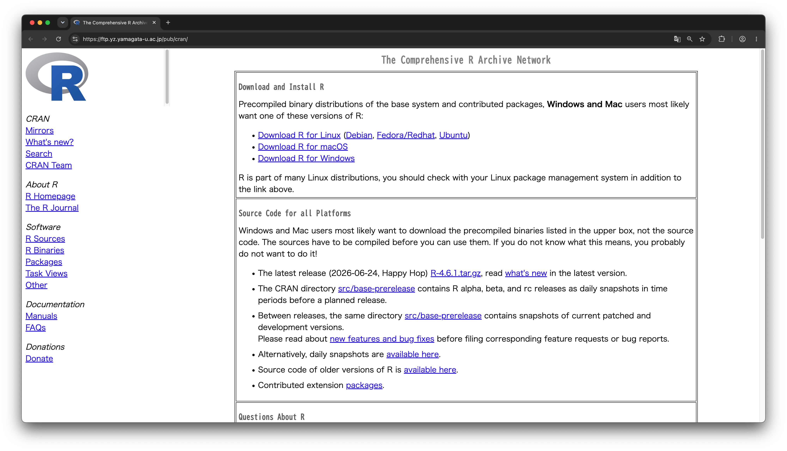
Windowsの場合
以下ではWindowsの場合を説明します。Macの人はMacの場合までスキップしてください。
Windowsでは，はじめの画面でbaseを選びます。
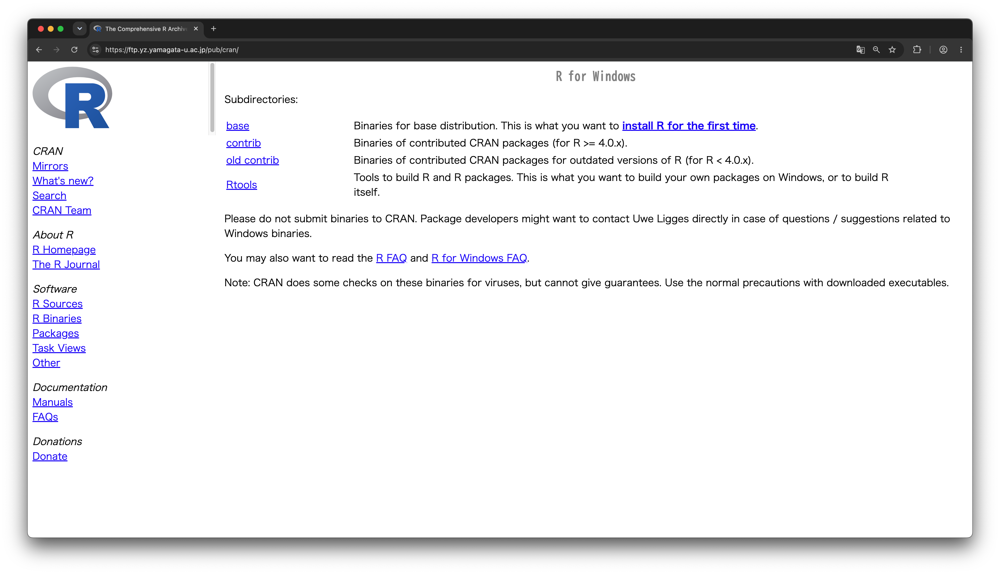
続いて一番上にある「Download R-4.6.1 for Windows」をクリックするとダウンロードが始まります。 Windowsやブラウザの設定を変えていなければ「ダウンロード」フォルダに保存されるはずです（多分）。
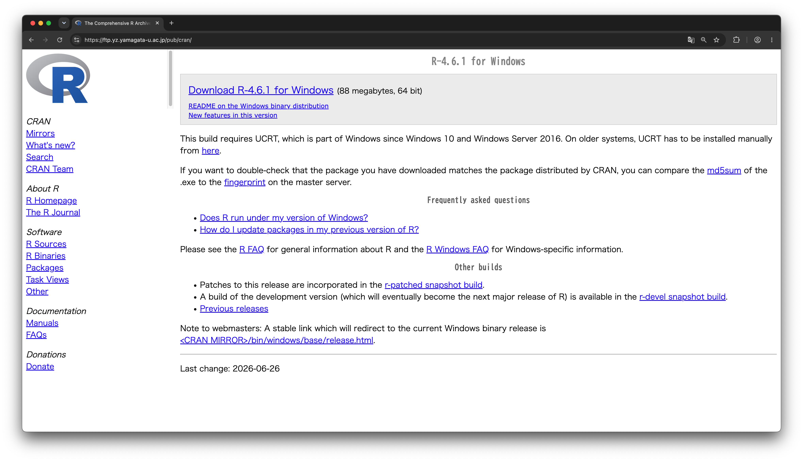
自分のPCの「ダウンロード」フォルダ内にある「R-4.6.1-win.exe」のファイルをダブルクリックするとインストーラーが起動して，PCへのインストールが始まります。「このアプリがデバイスに変更を加えることを許可しますか？」と聞かれたら「はい」を押してください。
セットアップに用いる言語の選択に続いて，ライセンスの情報，インストール先の選択など様々な画面が出てきますが，特にこだわりがなければ，全て既定の設定のまま「次へ」で大丈夫です。
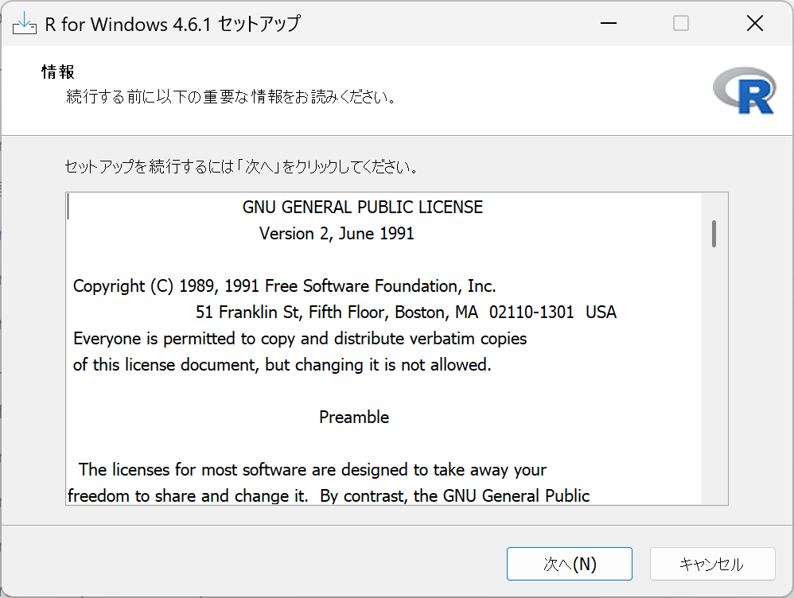
インストールを終えると，PCのアプリ一覧に加わっているはずです。タスクバー（デスクトップの下部にあるもの）の検索窓にRと打つと，おそらくRのアイコンが表示されるはずなので，クリックして起動できるか確認してみましょう。
Macの場合
以下ではMacOSの場合を説明します。Windowsの方はWindowsの場合を参照してください。
Macの場合は，AppleシリコンかIntelのCPUを搭載しているかでインストーラーが変わります。2022年以降に発売されたMacはおおむねAppleシリコンが使われているので，最近Macを買った人はAppleシリコンの方を選べばOKです。Appleメニューの「このMacについて」からチップやCPUの種類が確認できます。
該当する方の「R-4.6.1-xxx.pkg」をクリックするとダウンロードが始まります。ダウンロードされたファイルは，PCやブラウザの設定を変えていなければ「ダウンロード」フォルダに保存されます。
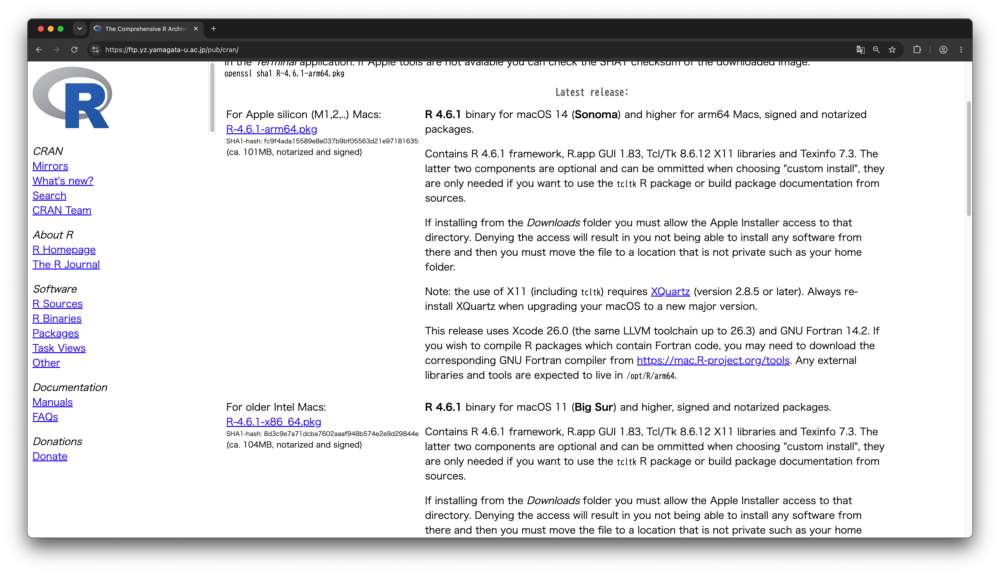
自分のPCに保存されたファイルをダブルクリックすると，インストーラーが起動します。 特にこだわりがなければ，何も変更せずに「続ける」と「同意する」をクリックして進めていくとRがPCに無事にインストールされるはずです。
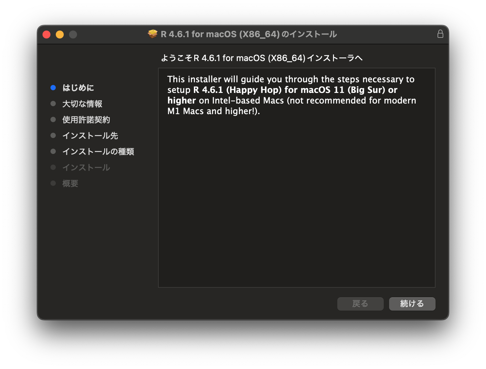
インストールされると「アプリケーション」フォルダの一覧の中にRが加わっているはずなので，起動できるか確認してみましょう。
RStudioのインストール
RStudioはPosit社（旧RStudio社）のページからダウンロードできます。
アクセスすると，OSごとにダウンロード先のリンクがあるので自分のPCに対応するものを選んでください1。Windows 11は2つありますが，Zipで圧縮されているかどうかなのでこだわりがなければ上の方を選んで大丈夫です。クリックすると，インストーラーが「ダウンロード」フォルダに保存されます。
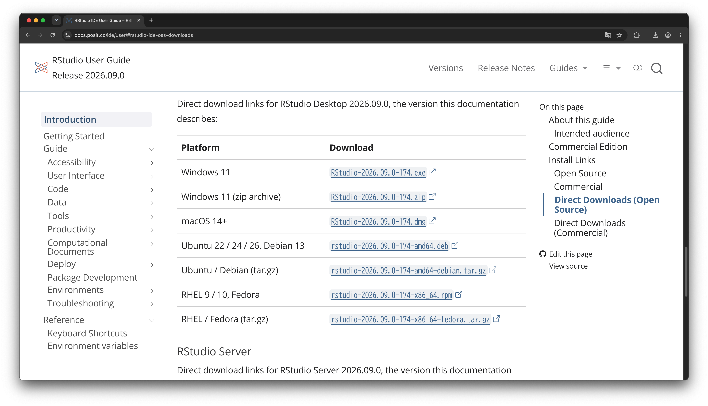
Windowsの場合
インストーラをダブルクリックすると，セットアップの手続きが始まります。 ここでも，こだわりがなければ初期設定のまま「次へ」を押していってもらえれば大丈夫です。
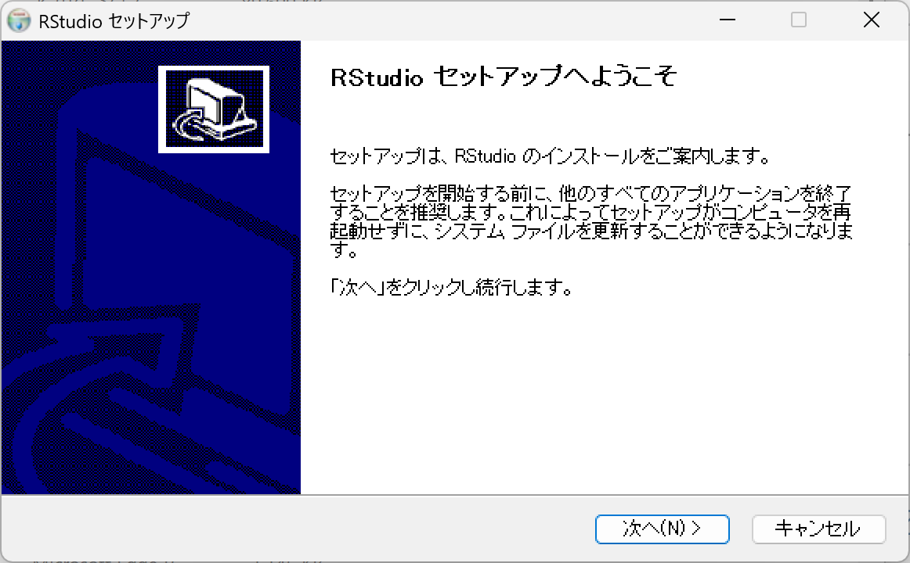
無事に最後まで進むとコンピュータのアプリ一覧に加わっているはずですので，起動できるか確認してみましょう。
Macの場合
インストーラーをダブルクリックするとマウントされますので，RStudioのアイコンをドラッグ&ドロップして「Applications」のフォルダに入れてください。
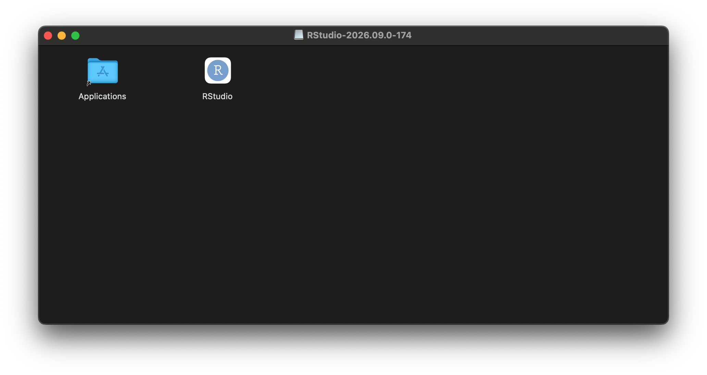
Rのときと同様に「アプリケーション」フォルダの中にRStudioが加わっているはずですので，起動できるか確認してみましょう。
RStudioの設定
RStudioでは，メニューバーのTools > Global Optionsから，様々な設定を変更することができます。 ここでは，RStudioでデータ分析を進めていくにあたって，いくつかおすすめの設定を紹介しておきます。
起動時に前回の作業内容を引き継がない
Workspaceの「Restore .RData into workspace at startup:」のチェックマークを外します。 また，「Save workspace to .RData on exit:」を「Never」に変更します。
こうすることで，毎回クリーンな状態のRから始めることができます。
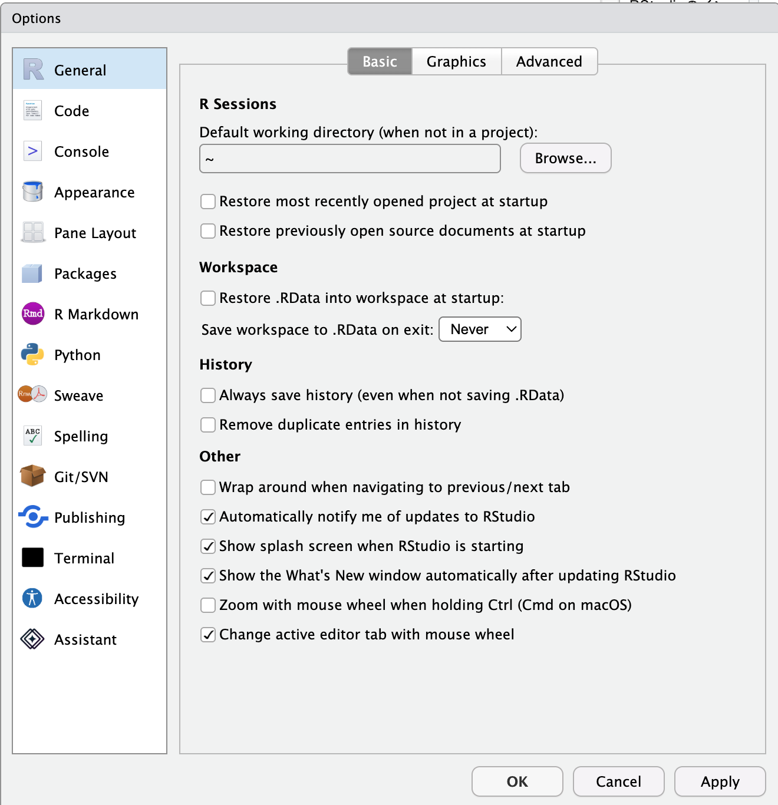
グラフィックスデバイスをAGGに変更する
Rの標準の描画エンジンだと，日本語を含むグラフを作成した際に文字がうまく表示されないことがあります（特にMac）。 グラフィックスデバイスをAGGという高性能なものに変更しておくと，文字化け問題にあまり悩まされなくなります。
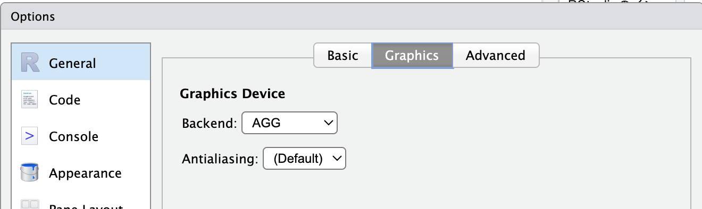
コード補完表示のための文字数を少なくする
RStudioでは変数や関数の名前を途中まで入力すると，その続きの候補が表示され，その状態でTabキーを押すことで変数名や関数名の続きが入力されます。 初期設定では3文字まで入力した時点でコードの候補が表示されますが，キーボード入力に慣れていない人は，これを2文字に変更することをおすすめしています。Code > Completionのタブの下の方にある「Show completions after characters entered:」の箇所で設定できます。
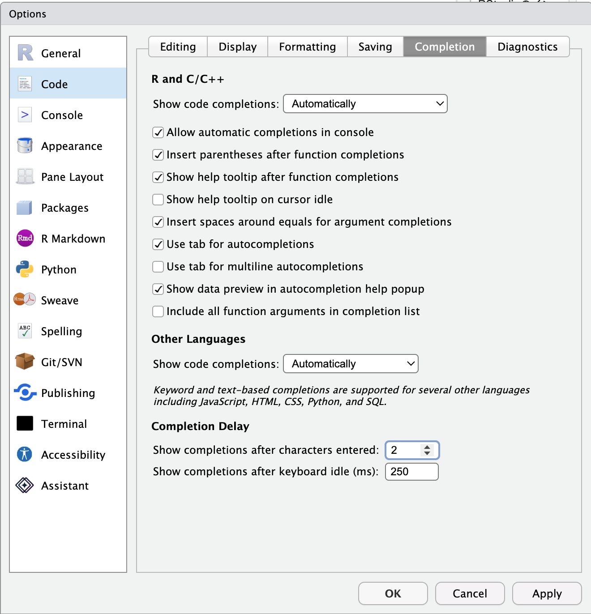
脚注
もし，Macで使用しているOSが古くて最新版のRStudioが対応していない場合には過去のRStudioのダウンロードページから，古いバージョンのRStudioをダウンロードすることもできます。↩︎